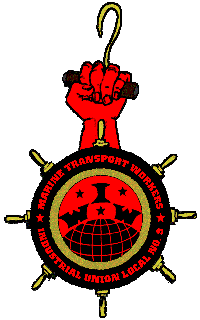

Declaration of Principles
We, the members of Marine Transport Workers Industrial Union, IWW, San Francisco Bay Ports Local #9, in order to defend our collective rights, to pursue our joint interests and achieve our common goals, and to fulfill the historic mission of our class to smash social inequality and injustice and establish a cooperative workers' commonwealth, in full and free acceptance of the duties and obligations we hereby assume, do unite under the following principles:
#1 - Direct Action
We are for militant job action at the point of production. The only place where workers possess the direct power to improve our wages and conditions and ultimately remake society, lies on the job. As Marine Transport Workers, we recognize that we occupy a strategic position in the process of international capitalist trade. We are determined to utilize this unique power we have to the fullest advantage of the international working class in its struggle against capitalist exploitation.
#2 - International Solidarity
We are for international solidarity between the workers of all countries. As Marine Transport Workers, we recognize that capitalism is international in scope and respects no national borders, and that in the maritime industry, our only method of defeating assaults upon our hard-won gains by the transnational shipping interests is to link arms across the waters with workers around the world and take concerted action to defend our rights and improve the living standards of all workers globally.
#3 - One Big Union
We are for One Big Union in Maritime. As Marine Transport Workers, we recognize that the division of workers in our industry into many different jurisdictionally-competitive trade and craft unions based on the skill and tool employed by different workers in the productive process--rather than in one fighting union organized along industrial lines--is an aid, not to maritime workers, but rather to the ship owners and the boss class. We are determined to exert all of our strength--both as an independent organization of workers in the maritime industry, and as members of our other unions--to increase cooperation and joint organizing and action between militant organizations of maritime workers, and ultimately to bring into being a complete organizational unity of all workers who toil on the world's seas, inland waterways and waterfronts.
#4 - Defense of Persecuted Class War Militants
We are for the right of all working-class militants, organizers and activists who take personal risks in order to defend our gains--the fruits of a century of struggle and sacrifice--to live their lives free from harassment, persecution and attack by the predatory boss class and their parasitic hirelings. As Marine Transport Workers, we recognize that capitalism will stop at nothing to punish those who stand up to its global rule. We are determined to provide sufficient means to defend our fellow workers against such attack, to mobilize a unified labor and community response, and to use our class power to force an end to the bosses' provocations. An injury to one is an injury to all!
#5 - Rank-and-File Democracy
We are for democratic, rank-and-file control of our unions, and against the bureaucratic, top-down method of union building which is prevalent and pervasive in the U.S. and international labor movement. As Marine Transport Workers, we recognize that the struggle for membership control of our unions is ongoing. We also recognize that differences in this regard exist between the various unions that hold job control in the maritime industry. The price of liberty is eternal vigilance, and we are determined to fight unceasingly for rank-and-file democracy, both within our own organization and within our other unions. We commit ourselves to extending the rights of democratic participation in each of our unions to all maritime workers regardless of seniority or card level, and we shall do everything in our power to assure full voice and vote and union representation to casuals, registrants, less-senior workers and others excluded from other unions' decision-making processes through our own independent, democratic organization.
#6 - Organize the Unorganized
We are for the organization of all maritime workers into a powerful fighting union that will defend their rights and interests on the job and in every aspect of life. As Marine Transport Workers, we recognize that the low wages and inferior and often dangerous working conditions of our unorganized maritime fellow workers drags down the conditions of workers in the industry who are fortunate enough to be organized in strong unions. The old maritime workers' slogan, A high tide raises all boats, means that we all benefit when we use our collective power to improve the wages and conditions of any group of workers. We are determined to pour every drop of our collective energy into the struggle to organize all maritime industry workers, and we commit ourselves to doing so both as an independent organization and in cooperation with other maritime unions with principled, supportable organizing programs.
#7 - No Scab Unions
We are for maximum cooperation between all maritime industry unions, and we are against jurisdictional wars and substandard contracts. As Marine Transport Workers, we recognize that certain trade and craft "unions" which exist in our industry do not fight for their members' best interests and rights, but intentionally act to undermine other unions' wages and conditions in order to "organize" shops merely to increase their dues base, cross other unions' picket lines in the course of unprincipled jurisdictional raiding, and therefore are obstacles to the development of a unified strategy for confronting attacks by the global ship owners and the rest of the capitalist class. We are determined, whenever possible, to prevent the exploitation of workers by these fake, scabby, pro-capitalist "unions."
#8 - No Discrimination
We are for the right of each and every worker to earn a good livelihood through his or her own labor, and we are opposed to the prevention of any worker from doing so under any pretext whatsoever. As Marine Transport Workers, we recognize that racism, sexism, homophobia, skill divisions and redbaiting, to name but a few, are tools the boss class uses to divide the working class against itself. This divide-and-rule tactic has been employed by the bosses since the dawn of capitalism, to undermine the great potential for social power that we workers possess by virtue of our numbers and our primary place in the productive process. We are determined to forge working-class unity as against the superficial divisions the capitalists use against us, and we commit ourselves to fight to extend economic opportunities to every group of workers who have been, or are being, excluded from or discriminated against within the maritime industry, whether by the bosses or by other unions.
#9 - Mutual Aid
We are for the independence and self-sufficiency of the working class and all its members. As Marine Transport Workers, we recognize, however, that capitalism is organized in such a manner that it robs our class of the ability to chart its own course, swindles individual workers out of their power over their own lives, and retards our development as free and autonomous individuals. We are determined to establish such means of collective mutual aid and assistance as lay within our capacity to create, in order to sustain ourselves, economically and otherwise, in our common struggle. And we pledge, each to all, to materially assist any fellow worker in need or adversity to the best of our abilities.
#10 - Against Fascism and War.
We are for a free, peaceful, just and democratic workers' society based upon the principles of mutual respect and cooperation between all the world's peoples. As Marine Transport Workers, we recognize and remember the pivotal and heroic role that was played in the struggle against fascism and war by workers in the maritime industry who came before us. We are determined to continue their valiant fight against fascism until we have achieved its final extinction from the face of the earth, and we pledge the last drop of our sweat and blood if necessary to this righteous purpose. We commit ourselves to waging an unrelenting struggle, as they did, against imperialist wars in which workers kill workers to increase capitalist profits. And finally, we promise, with all the nerve, vitality and tenacity we possess, to do our duty as troops in the only battle worth contesting: the class war to abolish capitalist tyranny. And we shall win.
Unanimously ratified at the second regular membership meeting of Marine Transport Workers Local #9, IWW, Monday, 17 August 1998, at the library of the Sailors Union of the Pacific hall in San Francisco